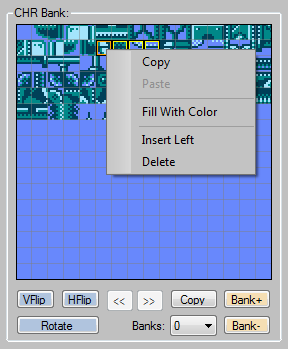
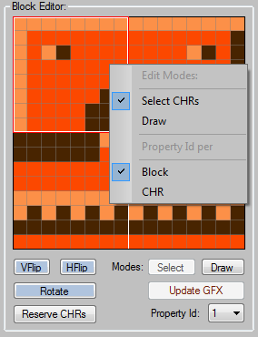
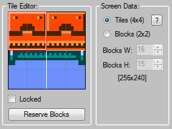
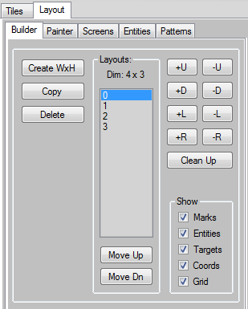
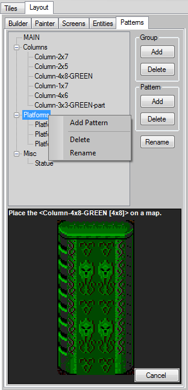

Tiles
Tab
Tiles
Tab
MAPeD Quick Guide
Contents:
The MAPeD is a tool for building a game levels for NES/SMS/PCE/ZX/SMD games from scratch.
The main features are:
tiles drawing/composing tools
building a game map using 2x2 or/and 4x4 tiles
entities editor
tile patterns manager
data optimization tool
several game maps in one project
detachable UI *
tile properties editing ( can be used as collisions data etc )
import of tiles and game maps from images **
NES: palette per 1x1 tile support ( MMC5 )
export to NES: CA65/NESasm, SMS: WLA-DX, PCE: CA65/PCEAS/HuC, ZX: SjASMPlus, SMD: vasm/SGDK with wide variety of options:
2x2/4x4 tiles
column/row data order
RLE compression
modes: multidirectional / bidirectional scrolling, static screens switching
NES: attributes per 1x1/2x2 tile
tiles properties per 1x1/2x2 tile
level topology options
entities
built-in Python script editor for writing custom data export scripts
export to the JSON format
export to the SjASMPlus (ZX-Spectrum) ***
easy data conversion ****
* Double-click on the following tabs to detach them: Layout, Tiles. Close detached tab container to return the tab to its place. The tabs can also be resized or maximized.
** Smart import of tiles and game maps from images with checking of duplicate CHRs/blocks/tiles and flipped CHRs. Automatic applying of palettes is supported for all platforms.
*** Each MAPeD can export data to the SjASMPlus with additional options.
**** You can load any platform project into any MAPeD editor with automatic data conversion. So it's easy to adapt your graphics from one platform to another.
A brief description of data types and their dependencies
There are three main datasets:
CHR Banks ( contain 1x1 tiles ) and its derivative data such as: Blocks(2x2), Tiles(4x4) and Screens *. You can use up to 256 CHR banks in your project.
Entities. You can group entities by types, set their properties and place them on a game map.
Layouts. A layout is a matrix of cells that represents your game map structure. Each cell can contain one link to a screen of any CHR bank and any number of entities instances. The maximum number of layouts available in a project is 256.
* When you begin your project, you can choose the screen data type: Tiles(4x4) or Blocks(2x2) (see the image below).
Tiles(4x4) are the most compact way to store screen data. Takes less memory and less graphics variety.
Blocks(2x2) data takes up 4 times the memory, but brings more graphics variety. Suitable for dynamic maps.
You can switch between these modes at any time. The only restriction is a Tiles(4x4) array overflow when converting Blocks(2x2) to Tiles(4x4).
The switching operation affects all CHR banks in your project.
Also you can set up a screen size in blocks. You can do that once for whole project, before clicking the "Bank+" button or loading another project.

Tiles Tab
Main Menu → CHR Bank
The “CHR Bank” is a graphics data bank, which contains 1x1 tiles data.
The main operations are ( select a CHR you want to work with ):
CHR data transformations:
There are three types of transformations: vertical flipping, horizontal flipping and clockwise rotation. Click the appropriate buttons to perform the actions. This also affects on blocks/tiles/screens.
CHR operations:
Copy: Copies a selected CHR.
Paste: Pastes a copy to selected position.
Fill With Color: Fills a selected position with an active color.
Insert Left: Inserts an empty CHR and shifts the rest to the right.
Delete: Deletes a selected CHR and shifts the rest to the left.
Data banks management:
Add a new bank ( the “Bank+” button ), delete an active bank ( the “Bank-” button ), make a copy of an active bank ( the “Copy” button ). Also you can switch between banks by selecting an appropriate bank from the “Banks” list and reorder them ( Main Menu → CHR Bank → Reorder Banks ).
SMS/PCE/ZX/SMD: Click the "<<" / ">>" buttons to switch between CHR bank's pages. Each page consists of 16x16 CHRs.
Tiles
Tab
There are 4 user defined palettes ( 1, 2, 3, 4 ). Press Shift+1, 2, 3, 4 to switch between them and press Ctrl+1, 2, 3, 4 to switch between colors inside an active palette.
To assign a new color to an active palette, just select a color slot inside the palette and click on any color in the main palette. Also you can select a color inside the main palette by pressing the left mouse button + mouse move.
NES: The leftmost color of each palette is a transparent color.
SMS/PCE/SMD: The leftmost color of the first 4 colors palette is a transparent color.
Custom palettes are stored in array in a separate list. You can copy or delete (NES) an active palette.
NES: "plt#00" is the main one and is active by default. All other palettes are auxiliary.
ZX: In the Speccy version there are two fixed color palettes. The first one is for dark colors (plt#00). The second one is for bright colors (plt#01).
NES: Also you can enable MMC5 extended attributes mode. When enabled, this allows you to assign a palette per CHR. By default you can assign a palette per block only.
SMS/PCE/SMD: Sometimes you may need to change colors order without changing graphics. For example, after importing graphics from images, you may need to back in place a transparent color. You can do that by clicking the "Swap Colors" button.

Tiles Tab
Main Menu → Blocks
Block – 2x2 tile
The “Block Editor” allows you to draw graphics and build blocks from CHR data.
The main operations are:
Edit modes switching:
There are two edit modes available: “Select CHRs” and “Draw”.
To switch between them, you can click the “Select” or “Draw” button or click the “Select CHRs” or “Draw” item in the context menu.
The “Select CHRs” mode allows you to assign CHRs to a selected block from CHR bank. To do that, you should select one of four CHR slots in the “Block Editor” field and click on a CHR in the CHR bank. All assigned CHRs will be highlighted in the CHR bank. Also in this mode you can assign a palette to the selected CHR.
The “Draw” mode allows you to draw pixels. When it's active, select a color and draw using a left mouse button.
Transformations:
There are three types of transformations: vertical flipping, horizontal flipping and clockwise rotation. Click the appropriate buttons to perform the actions.
SMS/SMD: 1) You can flip selected CHR when the "Select CHRs" mode is active. 2) You can't rotate flipped CHRs.
CHRs data reservation:
There are two ways to assign CHRs to a selected block. The first one, you can do that manually like described above. The second one, you can click the “Reserve CHRs” button for automatic CHRs assignment. The first empty CHRs in the CHR bank will be assigned to the selected block. The first CHR is reserved for an empty space and is ignored by the operation.
Block property assignment:
You can assign an integer value from 0 to 15 to each block or to block's CHRs. For example, it can be used as collision data or for marking a static dangerous object that decreases health points etc.
By default a property will be assigned to a whole block. To assign the property per CHR, you can click the “CHR” item in the context menu ( the “Property Id per” section ) or in the Main Menu → Blocks → Property Id per.
Graphics data updating:
When you make any changes to graphics content ( drawing, changing colors ) you should update all dependent content to see the result by clicking the “Update GFX” button.
Tip: All block data will be updated automatically when the “Blocks (2x2)” mode is active.
NES: Color indices correction:
Main Menu → Blocks → Shift Colors / Shift Transparency
When you load an SMS project or import tiles/game maps from images you may found that some CHRs need to be fixed to apply a palette correctly. For example, a transparent color need to be replaced with another color. There are two ways to fix that. The first one, you can redraw the CHRs. The second one, you can shift the CHR's color indices to bring back the transparent color to its place. You can do that by pressing Alt+F. When the "Shift Transparency" flag is active, all 4 color indicies will be cyclic shifted. Otherwise, only 3 color indicies will be modified. A transparency color index will be ignored.
When the "Select CHRs" mode is active this operation affects on a selected CHR only. When the "Draw" mode is active, you can modify CHRs indices of whole block.
ZX: There are two additional buttons:
“I<->P” - it swaps ink to paper and swaps colors. The operation result is visible in black and white mode only ( View Type: “B/W” or “Inv B/W” ). For example, when you import a game level from an image, you can't control an ink/paper order, so some CHRs can be inverted and you can find them by switching to the black and white mode. Using this button you can fix the issue.
“Invert” - it swaps ink to paper. The operation result is visible in color mode only ( View Type: “Graphics” ).
When the “Select CHRs” mode is active, these buttons invert a selected CHR and when the “Draw” mode is active, a whole block will be inverted.

Tiles Tab
Main Menu → Tiles
Tile – 4x4 tile
The “Tile Editor” allows you to build tiles from blocks (see the image above).
The main operations are:
Building a tile from blocks:
Select a tile, uncheck the “Locked” flag, click on one of the four block positions and assign a block to it by clicking on a block from the “Blocks” list. It's useful when you have drawn blocks.
Blocks data reservation:
The second way to assign blocks to a tile, you can click the “Reserve Blocks” button for automatic blocks assignment. The first 4 empty blocks will be assigned to your tile. It's useful when you are going to draw a tile. The first block is reserved for an empty space and is ignored by the operation.

Copy: Copies a selected block.
Paste Clone: Makes a full copy with CHRs duplication in the CHR bank.
Paste Refs: The resulting copy shares the same CHRs as the original block.
Clear CHRs: Clears block's CHRs in the CHR bank.
Clear Refs: Resets CHRs indices to zero.
Clear Properties: Resets all the blocks properties to zero.
Insert Left: Inserts an empty block at selected position and shifts the rest to the right.
Delete: Deletes a selected block and shifts the rest to the left.

Copy: Copies a selected tile.
Paste: Pastes a copy to selected position.
Clear Refs: Resets block's indices of a selected tile to zero.
Clear All Tiles: Resets block's indices of ALL tiles to zero.
Insert Left: Inserts an empty tile at selected position and shifts the rest to the right.
Delete: Deletes a selected tile and shifts the rest to the left.
View Type: It allows you to show the additional information: graphics ( by default ), property Id ( numbers/colors ) on both tiles and blocks, tile numbers or usage of tiles or blocks. It also affects on a map graphics in the layout viewport.
ZX: There are two additional modes: “B/W”, “Inv B/W”. “B/W” - black and white mode ( all inks – black, all papers – white ). “Inv B/W” - inverted black and white mode ( all inks – white, all papers - black ). Using these modes you can find inverted CHR glitches and fix them using the “I<->P” button.
Optimization: The operation allows you to remove all unused/duplicate CHRs, blocks, tiles and screens. You can select the data type(s) for optimization. Also you can check matched blocks (2x2) to identify similar data.
Set up screen dimensions in blocks 2x2.
Click the “Bank+” button to create a new CHR bank data to work with.
Make sure that the “Select” button at the “Block Editor” box is clicked. Thereby, now the block construction mode is enabled.
Click on any empty block in the “Blocks” list ( the first one usually is reserved for an empty space ). After that you can manually assign CHRs to the selected block by clicking on the block's CHR slot and a CHR in the CHR bank or click the “Reserve CHRs” button at the “Block Editor” box for automatic CHRs assignment.
Click the “Draw” button at the “Block Editor” box to switch to the drawing mode.
Select an active palette and a color.
Now you can draw pixels in the “Block Editor” field.
To assign blocks to a tile, click on any empty tile you want to work with ( the first one usually is reserved for an empty space ).
Uncheck the “Locked” flag at the “Tile Editor” box. Now you can assign blocks to the selected tile.
Assign blocks to the tile like described above.
Click the “Update GFX” button to see the result of your work. After that, block/tile/screen/level data will be updated and you will see the changes.
When you have prepared your tiles/blocks you can build a game map.
Layout Tab
The “Layout Editor” is a set of tools that allow you to create a game levels.
The available tools are:

The layout window contains the viewport where you can build your game levels.
For all the tabs:
- Map scaling:
a) Use a mouse wheel to scale a map in the viewport.
b) A quick roll of the mouse wheel scales an active map up to 2x.
c) Press “1” - 100%, “2” - 200%.
- Hold down the “Ctrl” key to pan a map in the viewport.
- Hold down the “Shift” key to select multiple screens.
Also you can scale an entity/pattern preview by a mouse wheel.
The viewport context menu options:
Right-clicking in the viewport shows the context menu that you can see at the picture.
The “Entity Order” ( bring to front or send to back ) and “Delete Selected Entity” options are available when the Entities tab is active.
To change an entity order or delete it, you should select it. Open the Entities tab to do that. Make sure that the “Edit Instances” mode is enabled ( if no, click the appropriate button to enable it ). Then click on an entity you want to work with, and after that you can change the entity order or delete it via the context menu.
Click the “Delete Selected Screen(s)” item to delete selected screens or a screen the cursor points to.
You can also delete all entities belonging to a certain screen by clicking on the “Delete Selected Screen Entities” item.
Each game level should have a start screen. Click the “Set Start Screen Mark” item to mark a screen the cursor points to as a start one.
Also you can assign a property to your screen. It's a numeric value from 0 to 15. Click the “Set Screen Property” item to assign it.
When creating a map of static screens or bi- or unidirectional scroller level there may be cases when you don't need to navigate to an adjacent screen. Take a look at the picture with white arrows below. This is an example of such case. There is an obstacle in the middle bottom part of the level. To make such level playable, according to its topology, you can use adjacent screen masks which define the path you can navigate. To avoid ambiguity, you have to define the adjacent screen masks for each screen in your map. You can do that through the appropriate viewport context menu item - “Adjacent Screens Mask”. Each letter ( L/U/R/D ) means a valid direction you can navigate from the current screen.
You can delete all screen marks ( start screen / screen property / adjacent screen mask ) in active level by clicking the Main Menu → Builder → Delete All Screen Marks item.

Layout Tab → Builder Tab
Main Menu → Builder
The builder tab allows you to create and manage your maps.
The main operations are:
The Builder tab allows you to create, make copies, delete your game maps, move them up/down in the level list, work with screen cells in a map. Also it allows you to control a visibility of a map items. Click the appropriate flags for that.
Working with screen cells:
Each level represents a matrix of cells X*Y regardless of your map topology. So, at first, when you start building a game map, you should create a matrix of screen cells which bounds your map by clicking the “Create WxH” button.
Also you can add/delete a column/row of screens to/from your map by clicking the +U/-U/+D/-D/+L/-L/+R/-R buttons.
Note: Screens data can be permanently deleted or left in the screen list (Screens Tab) for future use.
The “Clean Up” button allows you to delete all one-block filled screens in active layout at once.

Layout Tab → Painter Tab
The painter tab allows you to fill your map with tiles/blocks.
The main operations are:
When the painter tab shows a selected tile/block, you can place it on screens of an active map.
Note: You can only place a tile on screens that belong to an active CHR bank. Otherwise you will get a warning message.
There are two ways to select an active tile\block: by clicking the tiles\blocks on the Tiles tab or by clicking the “Tiles/Blocks” button that opens a new window with a tiles/blocks palette. Where you can easily select a tile or block to place it on a map screen.
The "Cancel" button resets an active tile. You can also press the Escape key for that.
At the top of the tab you can see the current screen data type: Tiles(4x4) or Blocks(2x2).
When the Tiles(4x4) mode is active, you can paint a map using Tiles(4x4) and Blocks(2x2) (blocks data is used for building tiles). When you use blocks, the tile list will automatically fill up. And when it overflows, you need to optimize it to reduce the amount of unnecessary tiles created during a painting process.
When the Blocks(2x2) mode is active, you can use blocks data only.
Scene scaling:
Click the “x1” or the “x2” button or you can press the <1> or <2> key to scale an active map by 100% or 200% respectively.
You can also work with tiles of selected screens. There are two options available:
“Fill With Tile”:
Select an active tile, select screens and click the “Fill With Tile” button. As a result, all the selected screens will be filled with the active tile.
“Replace Tiles”:
This option allows you to replace a group of identical tiles. Select an active tile, select screens and click the “Replace Tiles” button. Then select a tile on the selected screens that you want to replace and click on it. As a result, the group of identical tiles on the selected screens will be replaced with the active tile.

Layout Tab → Screens Tab
Main Menu → Screens
The screen list contains a set of images of created screens.
The main operations are:
The “Update Screens” button allows you to manually update all changes created during the tiles manipulation process. It becomes active when some changes are done.
The “Auto” flag when it's active allows you to automatically update all screens after clicking the "Update GFX" button, without clicking the “Update Screens” button.
Also you can see an active CHR bank index ( zero bank at the picture ).
To place a screen into a game map, just click on the screen image and click on a map's cell.
Tip: To reset a selected screen, click on any empty space inside the screen list or on an empty space outside an active map or press the Escape key.
By default you can see only a current CHR bank's screens. Click the “All Banks” flag to see all screens of all available CHR banks.
A screen name description:
At the picture you can see the following name – “B:0/S:0” it means a zero bank (B) and a zero screen (S).
Layout Tab → Entities Tab
Main Menu → Entities
The entity editor was designed for creating / editing entities, grouping them by type and placing on a game map.
The main operations are:
Add/Delete/Rename of a group or a base entity*:
You can add, delete, rename an entities group, as well as base entities within the group. There are three ways to do that: using the context menu inside the tree view, the buttons at the right side of the tree view or via the Main Menu → Entities.
At the right side of a base entity in the tree view, you can see the number of the entity instances in active map ( [N] base_entity_name ).
Entity editor:
Clicking on any entity in the tree view leads to display its parameters in the entity editor ( the “Active Entity” group box ).
The editable parameters from top to bottom:
Use a mouse wheel to scale an entity image in the preview window.
Working with a game map:
When the “Edit Entities” mode is active, you can place a current editable entity on a game map ( you can see the current edit mode at the left top corner of the layout viewport ). Just click on any screen cell with a screen image inside to put the entity on a game map.
If you want to edit an entity instance you need to switch to the “Edit Instances” mode by clicking the “Edit Instances” button or by pressing the Escape key, if the “Edit Entity” mode is active. After that you can select your entity in the layout viewport. Move it using a LEFT mouse button and edit its parameters in the entity editor.
How to:
Delete instances of all entities from an active map: Main Menu → Entities → Delete Instances of All Entities
Delete all instances of a certain base entity from an active map: Select the base entity in the tree view → Context menu → Delete All Instances
Delete all instances from a certain screen: Point the cursor over the screen → Context menu → Delete Selected Screen Entities
* Base entity is an entity created in the tree view control. An entity instance is a base entity placed on a game map.
** Properties are space separated 8-bit hexadecimal values ( 80 f6 1e ... etc ). SMD: 16-bit values are supported.

Layout Tab → Patterns Tab
Main Menu → Patterns
Tile patterns are often-used combinations of tiles. The tile patterns manager was designed for creating tile patterns, grouping them by type and placing on a game map.
The main operations are:
Add/Delete/Rename of a group or a single tile pattern:
You can add, delete, rename a tile patterns group, as well as a single tile pattern within the group. There are three ways to do that: using the context menu inside the tree view, the buttons at the right side of the tree view or via the Main Menu → Patterns.
Creating a tile pattern:
Placing a tile pattern on a map:
Use a mouse wheel to scale a tile pattern image in the preview window.
Tiles tab: Select a screen size of your project.
Tiles tab: Click the “Bank+” button.
Tiles tab: Draw tiles or import them from an external image source.
Layout tab → Builder tab: Click the “Create WxH” button to create an empty map.
Layout tab → Painter tab: Fill up your map with tiles.
Layout tab → Entities tab: Create and place entities on your map.
Layout tab: Set the start screen mark using the context menu of the layout viewport.
Main Menu → File → Load / Save
NES project file has a .mapednes extension.
SMS project file has a .mapedsms extension.
PCE project file has a .mapedpce extension.
ZX project file has a .mapedzx extension.
SMD project file has a .mapedsmd extension.
Main Menu → File → Import
There are four data formats available for import:
NES/SMS .sprednes/.spredsms CHR banks and a palette data
Raw CHR data ( .bin or .chr )
Tiles/Game Map data 2/4/8 bpp ( .bmp ) *
Palette ( .plt )
* Smart import of tiles from images with checking of duplicate CHRs/blocks/tiles and flipped (SMS/SMD) CHRs. Imported images must be a multiple of 16 for blocks data and a multiple of 32 for tiles data. Also the same way you can import game maps from images. It's recommended that an imported image size must be a multiple of a game screen size.
Automatic applying of palettes is also supported for all platforms.
SMS/PCE/SMD: There are two types of indexed images: with an ordered palettes array of 16-colors and with an unordered colors in a palette. The both types are supported by the application. Thus, you can import an image palette “AS IS”, as an array of predefined 16-colors or as a palette of unordered colors. In the last case the whole palette will be optimized to minimize the number of 16-color palettes and colors, if it's possible.
Note: To get the best result, colors should not be duplicated in a palette.
For successful applying of palettes, an importing image must meets the following requirements:
platform compatible graphics
one CHR bank data
static palette
tile aligned
Main Menu → File → Export
There are five data formats available for export:
NES: CA65/NESasm / SMS: WLA-DX / PCE: CA65/PCEAS/HuC / ZX: SjASMPlus / SMD: vasm/SGDK ( .asm )*
ZX Asm ( .zxa ) - SjASMPlus data **
Active tile/block set ( .bmp )
Active layout ( .png ) ***
Text ( .json ) - whole project data
* See exported .asm / .zxa files to get more info. SMD: When exporting data to the SGDK you should select a ROOT directory of your project and all files will be copied automatically to the 'data/inc/src' directories.
** The same as in the ZX version, but with dithering. To achieve the best result, try to change the "Ink Factor" value. So, there are two ways to export ZX data: using MAPeD-ZX or any other MAPeD editor.
*** Just an image of an active layout without entities.
Main Menu → File → Export Script Editor (Alt + X)
If you need your own data format, you can write an export script using Python. Press Alt+X to open a simple Python script editor.
The Python API you can find here './doc/MAPeD_Data_Export_Python_API.html'.
The sample script of using the API: `./scripts/MAPeD_project_stats.py`
The data export API was designed to work with a current application data state. So you can retrieve data, but you can't modify it. Application data will always remain unchanged.
Main Menu → File → Description
The project description window. You can write a short description of your project. Optionally the window can be opened automatically after loading a project.
Main Menu → File → Statistics
A brief statistics of your project.
Copyright (c) 2019-2022 0x8BitDev